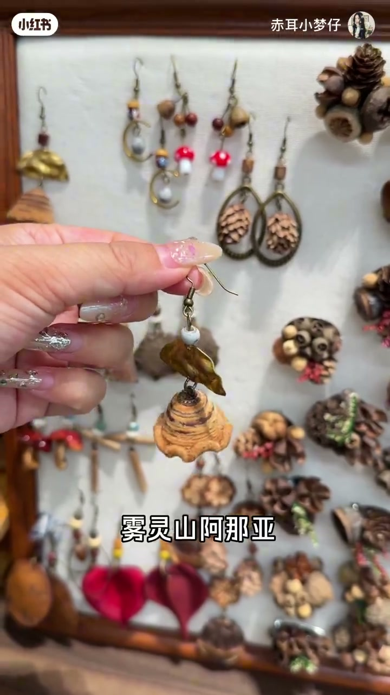
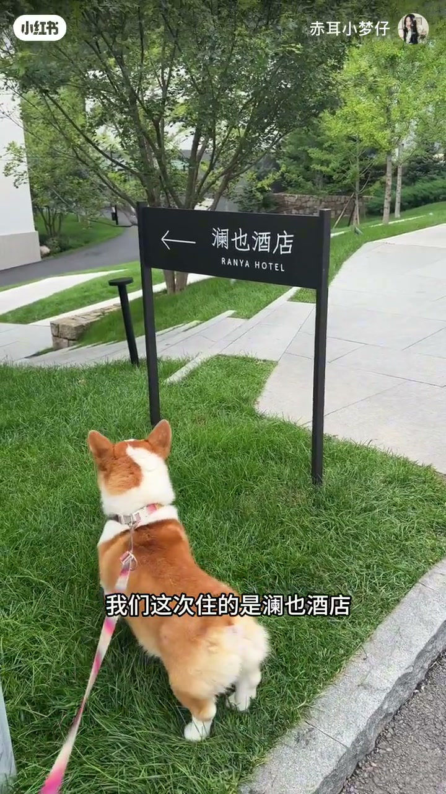
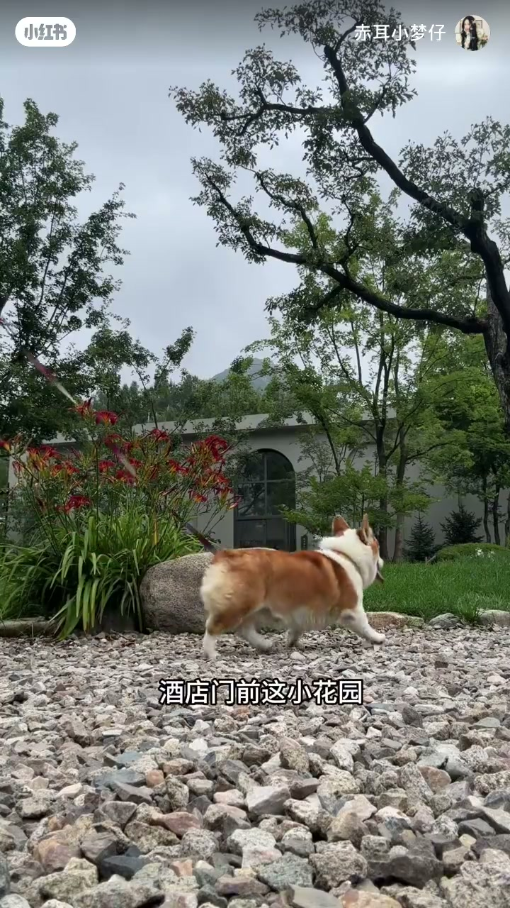
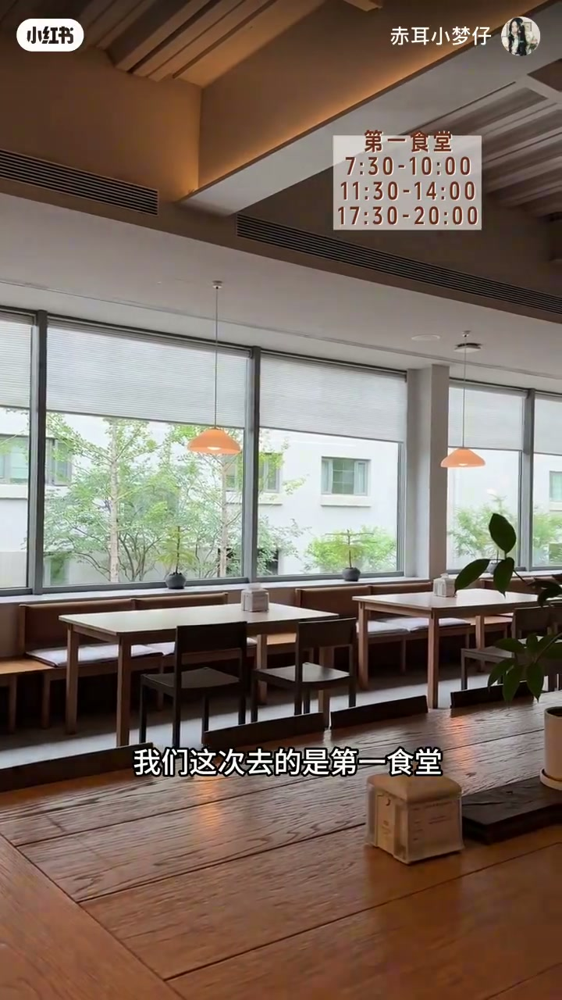
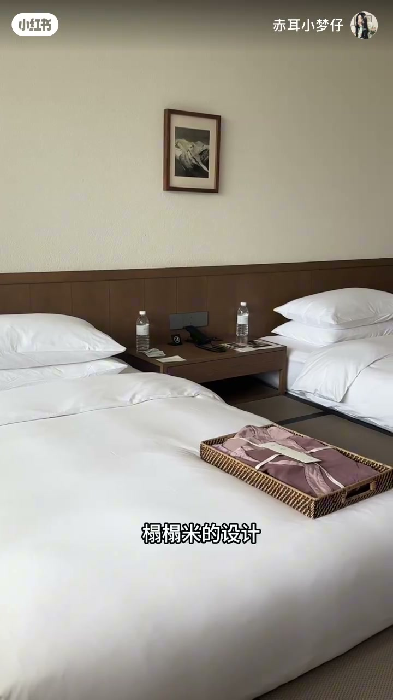
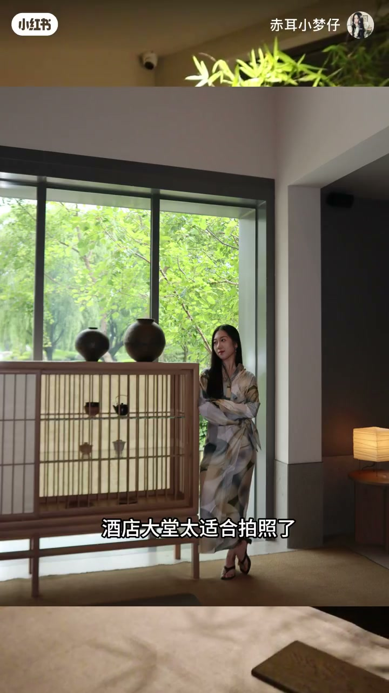
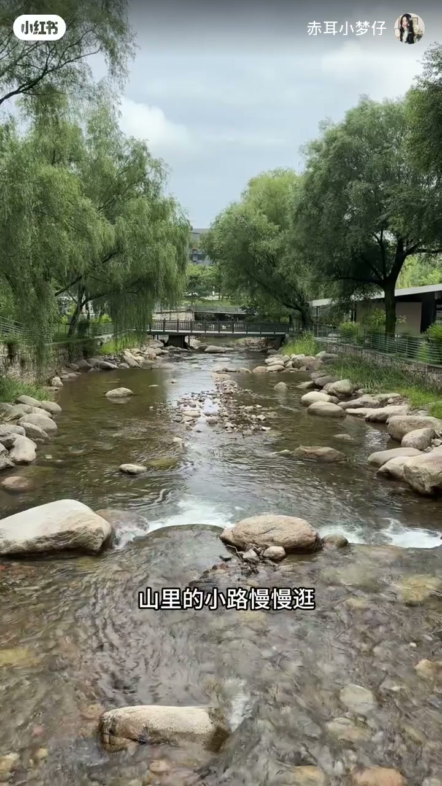
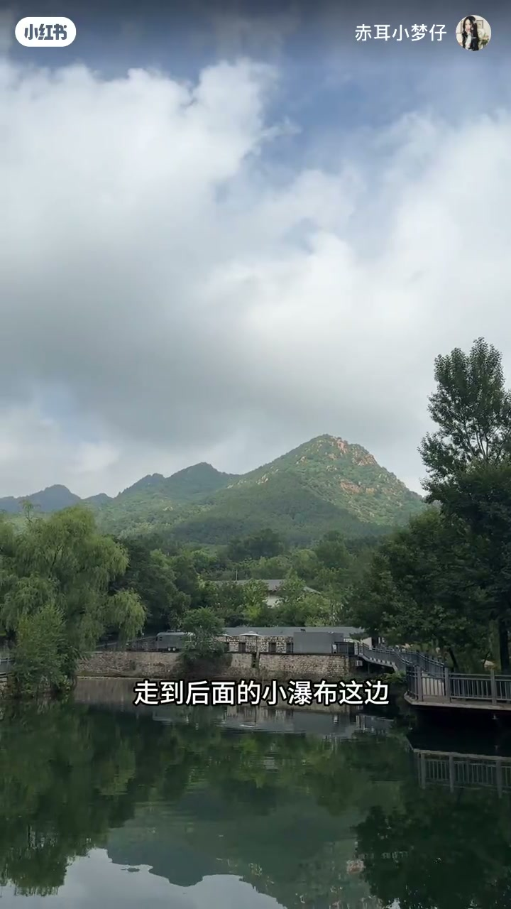
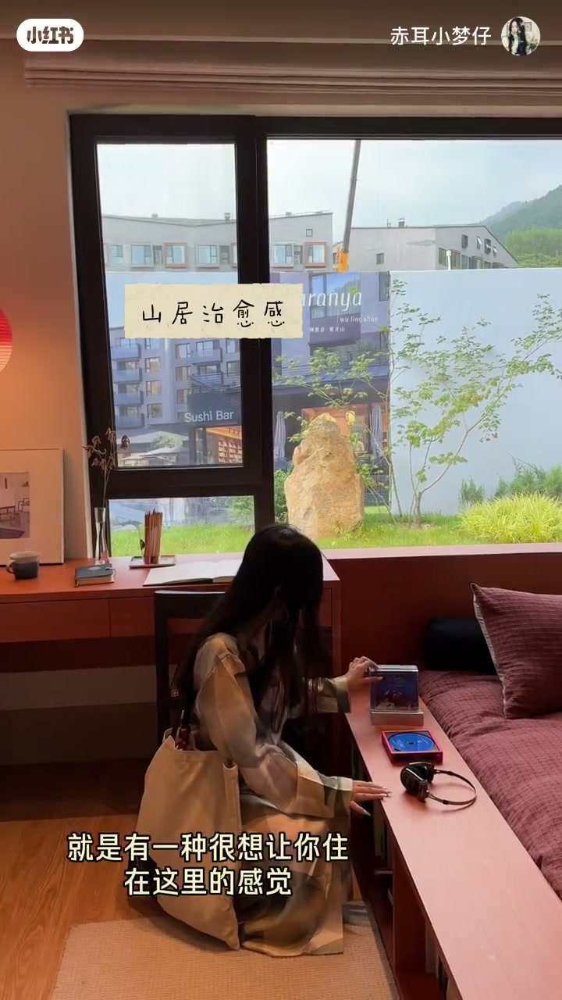

内容要点
一支 2.5 分钟的山居旅行 vlog：只有两天时间、想找远离城市又能带小狗的地方，博主选择雾灵山阿那亚。视频按时间线记录从出发、入住蓝椰酒店、第一食堂吃饭、榻榻米房间休息、大堂与杂货商店，到沿山路逛小景点、山泉与瀑布、售楼处与灯塔自然乐园，最后去抹茶店、泡温泉的完整两天一夜体验。
知识结构
远离城市、温度适宜、能带小狗度假，推荐雾灵山阿那亚——吹风、泡汤、看山、等日落。
早 8 点出发，途经金海湖服务区、穿过隧道到承德兴隆地界；入住蓝椰酒店，车停入口，酒店门前小花园很出片。
小狗送到民宿有家人陪；入住送餐券、食堂通用，第一食堂覆盖早中晚，山楂红烧肉等菜品选择多，适合家庭。
房间榻榻米设计简洁干净、卫生间空间大；大堂适合拍照，旁边杂货商店卖摆件家居与精致生活用品。
沿小路逛周边景点，山泉水清凉、小瀑布流水声静心；建议从一期走到二期，售楼处外景和样板间出片，灯塔自然乐园适合带小朋友。
约下午 5 点温泉，先到抹茶店点招牌抹茶饮和冰淇淋；去温泉的路被绿植包围、沿台阶而上，进门工作人员讲解流程，先一层冲洗换泳衣。
雾灵山阿那亚是适合两天一夜、宠物友好的山居度假地：住宿、餐饮、遛弯、打卡、泡汤一应俱全，节奏松弛不赶行程，从一期到二期沿路都能出片。
00:00-00:40出发、到达与入住蓝椰酒店
00:00视频开场给出推荐前提：只有两天时间，想找一个远离城市、温度适宜、还能带着小狗度假的地方，博主直接推荐雾灵山阿那亚——不用赶行程、不挤人潮，吹风泡汤看山等日落。今天就用视频沉浸式体验两天一夜的山居生活。

00:15早晨 8 点多出发，一路开过来路过金海湖服务区，再穿过几个长长的隧道，就到了承德兴隆的地界。这次住的是蓝椰酒店，车可以停在酒店入口附近；办理入住后会送早餐餐券，几家食堂都能通用。

00:32先把行李寄存，然后冲向酒店门前的小花园——这里真的非常漂亮，大概能刷到很多小狗的「朋友圈」。

00:40-01:01小狗托管与第一食堂
00:40把小狗送到民宿去吃饭——不用担心它不是独居，有家人陪着。这次吃饭选的是第一食堂，覆盖早中晚三餐，山楂红烧肉、鱼类、肉类、素菜、主食、汤饼等选择很多，一家人来的话再适合不过。

01:01-01:23榻榻米房间与酒店大堂
00:61吃完饭上楼休息一会儿、换身衣服。房间是榻榻米设计，简简单单又很干净；尤其是卫生间空间很大，干净又敞亮。

00:73收拾完下楼，发现酒店大堂特别适合拍照；大堂旁边就是一家杂货商店，喜欢各种摆件、家居、精致生活方式的朋友可以过来逛逛。

01:23-01:55山间漫步打卡
00:83之后沿着山里的小路慢慢逛，把周边的小景点绕了一圈，闲暇时间就过来拍照。汤泉后面还有一处山泉，伸手摸了一下，水特别清凉；走到后面的小瀑布，听着流水哗哗的声音，整个人都静下来了。


00:103如果不着急、也没有其他安排，建议从一期走到二期：中途会经过一个售楼处，外景和样板间都特别出片；再往前是灯塔自然乐园，特别适合带小朋友来玩，亲子游完全没问题。

01:55-02:26抹茶店与温泉
00:115这次主要约了下午 5 点的温泉，时间还富裕，就先来小山口——一家专门的抹茶店，点了招牌抹茶饮和抹茶奶油双拼冰淇淋，不是那么苦，带着一点点甜。
00:127去温泉的路上全程被绿植包围，有点像魔法屋；顺着台阶一步一步往上走，真有曲径通幽的感觉。进来之后工作人员会细心地讲解流程，先在一层冲洗换泳衣。